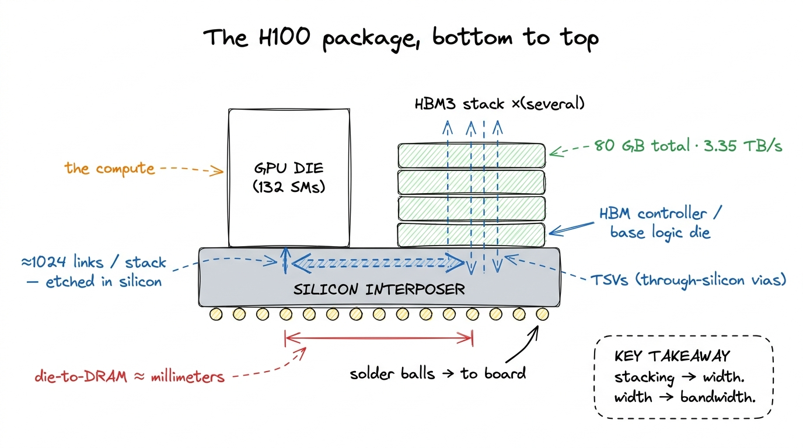
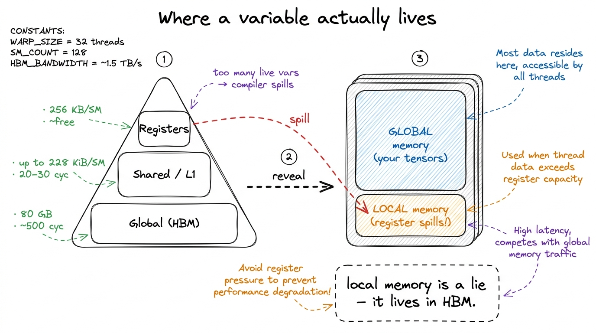
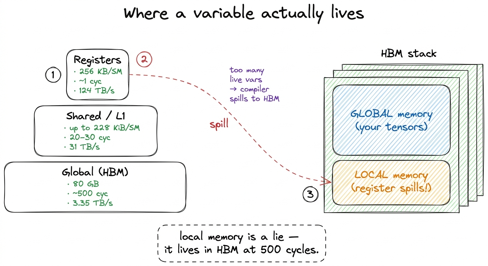

HBM, global memory & the package HBM
Every optimization on this site, all the way up the GEMM ladder, is ultimately an argument about one physical object: a stack of DRAM dies sitting a few millimeters from the compute die, connected by a highway of wires etched into a slab of silicon. When we say a kernel is "memory-bound," we mean it is waiting on that — on bytes crawling in from High-Bandwidth Memory (HBM). So before we write a single kernel, it is worth looking hard at where global memory actually lives, how it is wired to the chip, and why its bandwidth — enormous as it is — is the wall almost every kernel eventually hits.
The headline numbers I keep taped above my desk for an H100 SXM5 are 80 GB of capacity at about 3.35 TB/s of bandwidth. Those two numbers are the boundary conditions for everything else. Hold onto them; by the end of this article I want you to feel why 3.35 TB/s, which sounds infinite, is in practice a scarce resource I learned to spend carefully.
The package: DRAM on top, links underneath
A modern data-center GPU is not one chip. It is a small city of chips co-packaged on a shared piece of silicon, and understanding the geography is what first made the bandwidth number stop feeling arbitrary to me.
I like to start with the memory itself. HBM is stacked DRAM: instead of laying memory chips flat on a board (as GDDR does on a gaming card), you take several DRAM dies and stack them vertically, one on top of another, into a single tall block. An H100 stack is typically several DRAM dies high sitting on top of a base logic die — the HBM controller die — which handles the interface to the rest of the world.1 The number of dies per stack has climbed each HBM generation. What matters for us is not the exact count but the consequence: stacking is what lets a single stack expose a preposterously wide interface without needing a physically enormous chip. To move data vertically through that tower, the dies are pierced by through-silicon vias (TSVs) — literal holes drilled through the silicon and filled with conductor, so a signal can travel straight up the stack instead of routing around the edge.
Why go to all this trouble? Because stacking is how you get width. Each HBM stack talks to the GPU over roughly 1024 data links — a bus 1024 bits wide, per stack. Compare that to the 32-bit-per-chip buses of ordinary DRAM. Bandwidth is width times clock, and HBM wins overwhelmingly on width. It runs at a modest clock and still delivers terabytes per second, because a thousand wires are all switching at once.
Those thousand wires have to go somewhere, and a normal circuit board cannot route them. This is where the silicon interposer comes in: a slab of silicon that sits under both the GPU die and the HBM stacks, acting as a tiny, ultra-dense circuit board. The wires that connect the memory to the compute die are etched into the interposer at chip-fabrication density, not board density, which is the only way you fit 1024 links per stack (times several stacks) into a few square centimeters. The whole assembly — GPU die plus HBM stacks on an interposer — is what NVIDIA means by "the package."

figure rendering · The package. Memory stacked vertically (TSVs), wired to compute horizoThe payoff of all this packaging is short wires. Because the DRAM sits millimeters from the compute die on the same interposer — rather than centimeters away across a board — the links can run wide and fast at low energy. That proximity is exactly why global memory latency, though high in absolute terms at roughly 500 clock cycles, is not higher still.2 500 cycles is a useful order-of-magnitude figure for a global-memory access that misses every cache. On-chip shared memory is 20–30 cycles; a register read is effectively free. The whole memory-hierarchy game is about turning 500-cycle accesses into 20-cycle ones.
Global memory, and the local memory hiding inside it
From a CUDA programmer's point of view, that 80 GB of HBM is global memory — the big, slow, everyone-can-see-it pool. Every input tensor you cudaMalloc, every output you write back, lives here. It is the only memory large enough to hold a real model's weights, and the only memory that persists across kernel launches. It is also, per the three regimes, the thing you are almost always waiting on.
But global memory is not the only thing living in those DRAM dies. There is a second, sneakier resident: local memory. The name is a lie — local memory is not local to anything fast. It is the per-thread private storage the compiler falls back on when a thread needs more state than fits in its registers.
Recall the register budget. Each Streaming Multiprocessor (SM) has a 256 KB register file (65536 32-bit registers), and a single thread can use at most 255 registers. When a kernel's per-thread working set exceeds what the compiler can allocate — too many live variables, a big local array, deep inlining — the compiler spills the excess. Those spilled values do not go to some emergency on-chip scratchpad. They go to local memory, and local memory physically resides in global memory: the exact same HBM dies, at the exact same ~500-cycle latency.3 Spilled local memory does get to use the L1/L2 caches on the way, so a hot spill is not always a full HBM round-trip. But you cannot count on it, and a spill in an inner loop is one of the most reliable ways to wreck a kernel's performance.
This is the trap that caught me the first time I "optimized" a kernel by hoarding everything in registers. Push register pressure too high and the compiler quietly spills, and your blazing on-chip variable is secretly a 500-cycle HBM access wearing a register's name. When we get to the register-tiling kernels later in the ladder, I learned to watch the compiler's spill behavior in the SASS obsessively — it is not optional; it is the difference between the 68.7%-of-cuBLAS 2D-tile kernel and something far slower.
// Innocent-looking. If N is large and this array is indexed
// dynamically, `scratch` cannot live in registers — it spills
// to LOCAL memory, i.e. to HBM, at ~500 cycles per access.
__global__ void danger(const float* in, float* out, int N) {
float scratch[64]; // per-thread private array
for (int i = 0; i < 64; ++i)
scratch[i] = in[threadIdx.x + i * N];
// ... dynamic indexing here forces scratch into local memory ...
}
figure rendering · Global and local memory share the same DRAM. A register spill is a secEvery kernel is a memory-traffic problem
Now I can state the thesis this whole section has been building toward, the one that reframed how I read every profile afterward. You cannot compute on a byte you do not have. Every FLOP a tensor core performs consumes operands that started their life in HBM, and every result eventually returns there. The GPU can issue math far faster than HBM can feed it, so for a huge class of kernels the ceiling is set not by the 989 TFLOP/s the tensor cores can do but by the 3.35 TB/s at which HBM can move bytes.
Put those two numbers together and you get the machine's ridge point, the arithmetic intensity at which the two ceilings cross: roughly 989e12 / 3.35e12 ≈ 295 FLOPs per byte.4 The A100 the sources measure sits at a much lower ridge — around 13 FLOPs/byte for its FP32 pipes (≈19.5 TFLOP/s over ≈1.5 TB/s). The two ridges aren't a strict apples-to-apples comparison — the 295 here is a BF16 tensor-core figure — but the direction is unmistakable: compute has grown faster than bandwidth generation over generation, so the ridge keeps sliding right and the set of "automatically compute-bound" kernels keeps shrinking. A kernel that moves more bytes than that per FLOP is memory-bound, full stop, and no amount of tensor-core cleverness will help it. This is exactly why the naive GEMM in kernel 1 reaches a humiliating 1.3% of cuBLAS: it re-reads a full row of A and a full column of B from HBM for every single output element, drowning the chip in redundant memory traffic while the math units sit idle.
The arithmetic is worth doing by hand once. A large N × N GEMM performs about 2N³ FLOPs but only needs to touch about 3N² numbers — the two inputs and one output. Its intrinsic arithmetic intensity therefore grows with N, and for a 4096 × 4096 matmul it is thousands of FLOPs per byte, comfortably past the 295 ridge. So a GEMM can be compute-bound. The naive kernel just throws that gift away by reading each operand N times instead of once. Every optimization on the ladder — coalescing, shared memory tiling, register tiling, vectorized float4 loads — is, underneath the vocabulary, a scheme to move each byte from HBM fewer times and reuse it more once it arrives on-chip. That is the entire game.

figure rendering · The roofline. The naive kernel lives on the memory-bound slope; everyWhat this sets up
So the physical story and the performance story are the same story. HBM's 1024-links-per-stack, TSV-pierced, interposer-wired design exists to make 3.35 TB/s possible — and even that heroic number is the binding constraint for most real kernels, because compute has outrun bandwidth and the ridge point sits all the way out at ~295 FLOPs per byte. Global memory holds your tensors; local memory secretly holds your register spills in the very same dies; and the job of a kernel engineer is, more than anything else, to touch those dies as rarely as possible.
That is why the next thing we build is not a faster multiply but a picture of the whole chip above the memory — the SMs, the register file, and the on-chip SRAM where reused bytes actually live. Once we can see where a byte goes after it climbs the interposer, the coalescing and tiling optimizations that carry the GEMM ladder from 1.3% to 93.7% of cuBLAS stop looking like tricks and start looking like the only sensible response to the hardware in front of us.